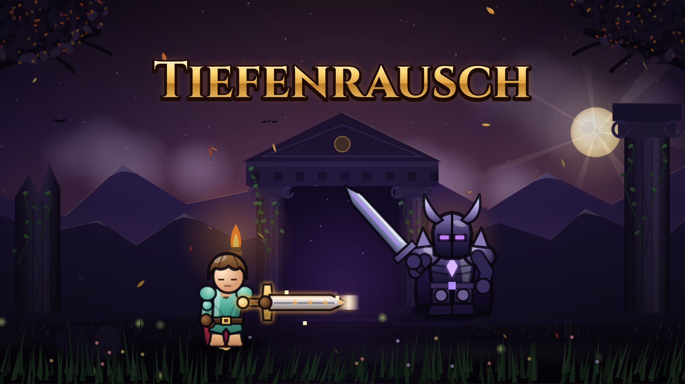
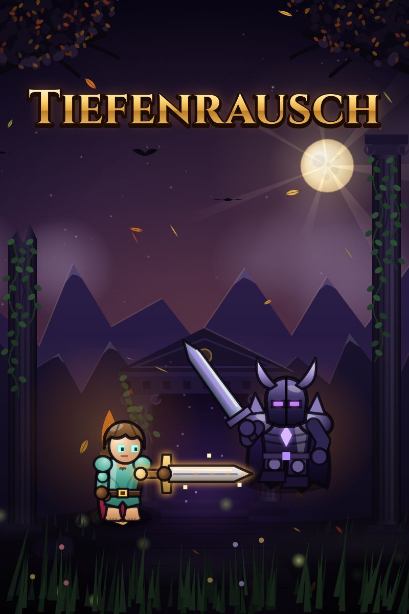
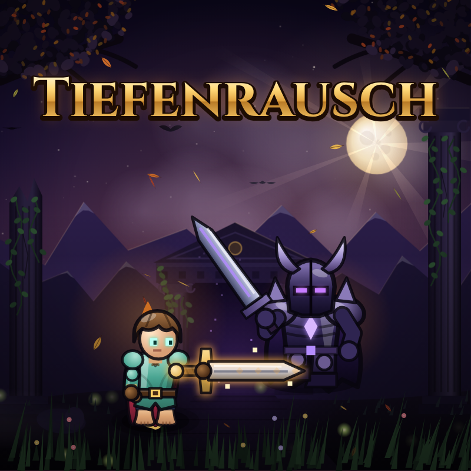

Tiefenrausch – Bilder und Videos zum Herunterladen
Rechtsklick auf den Knopf → „Link speichern unter…“ (oder Knopf anklicken, dann Rechtsklick → „Speichern unter…“).
Landscape 16:9 (1920×1080)

⬇ cover_1920x1080.png
Portrait 2:3 (800×1200)

⬇ cover_800x1200.png
Square 1:1 (800×800)

⬇ cover_800x800.png
Landscape-Video (1920×1080, 15 s)
⬇ video_landscape_1920x1080.mp4
Portrait-Video (1080×1920, 15 s)
⬇ video_portrait_1080x1920.mp4